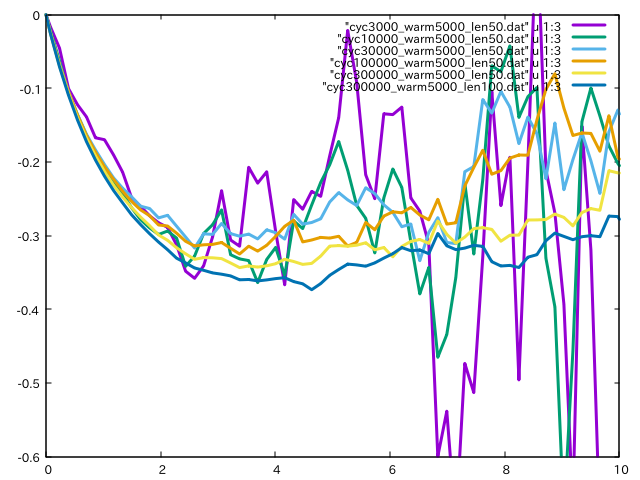
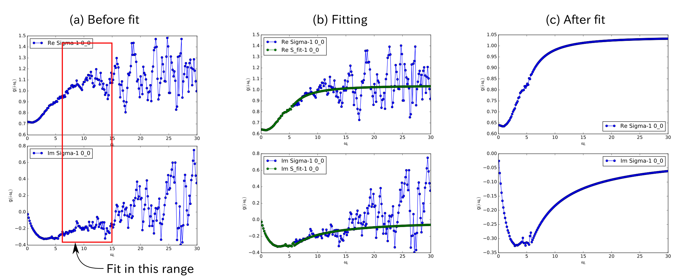
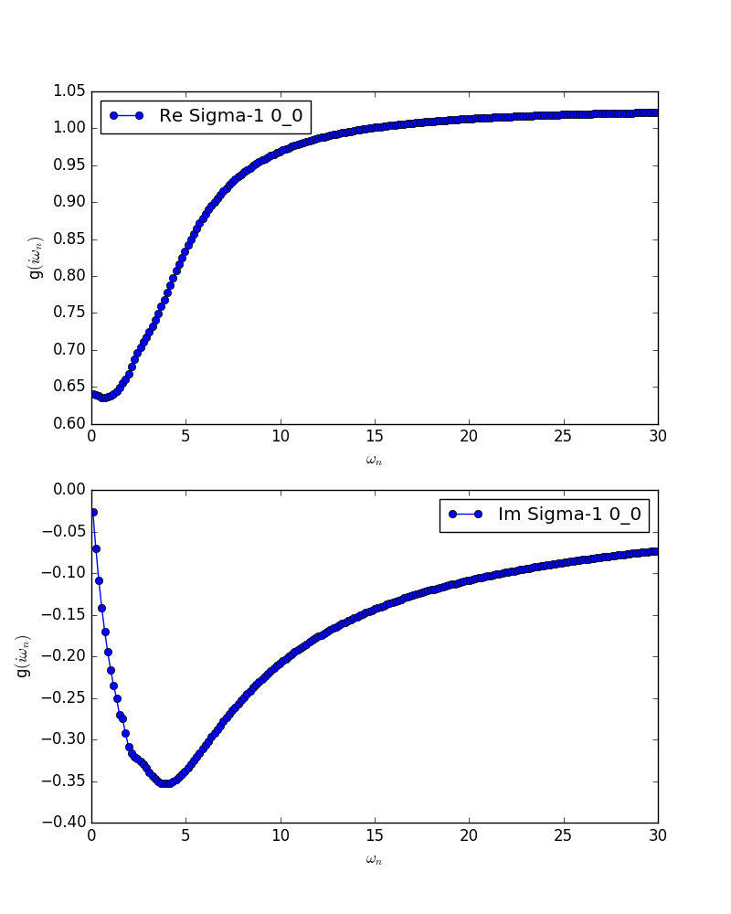

CT-QMC: TRIQS/cthyb¶
Warning
This document was written for ver.1.x, and might include descriptions incompatible with the latest version. If you encounter some problem, see the release note of ver.2.0 and check the differences between ver.1.x and ver.2.0.
Install¶
Follow the installation guide in TRIQS/cthyb.
Note
Checkout tag 1.4.2 on master branch, or download the released package from here.
Be sure to use the same C++ compiler as the one used to build the
TRIQSlibrary.If you want to treat the spin-orbit coupling in
TRIQS/cthybsolver, it must be built with the following CMake options:-DHYBRIDISATION_IS_COMPLEX=ON -DLOCAL_HAMILTONIAN_IS_COMPLEX=ON
Basic parameters for QMC¶
The accuracy of the TRIQS/cthyb calculation depends on mainly the following three parameters.
n_cycles{int}The number of QMC cycles for computing any quantities. The numerical noise can be reduced by increasing this parameter.
When we use the MPI parallelism, the total number of QMC cycle (
number-of-processes * n_cycles) affects the accuracy. Therefore, n_cycles in inverse proportion to the number of MPI processes keeps the accuracy.
n_warmup_cycles{int}The number of QMC cycles for the thermalization before the above main calculation. If it is insufficient, the state to be computed may be different from the equilibrium state.
This parameter is independent of the MPI parallelism.
length_cycle{int}Each QMC cycles have sub-cycles. The length of this sub-cycle should be long enough to escape from the auto-correlation.
This parameter is independent of the MPI parallelism.
The computational time is proportional to length_cycle*(n_cycles+n_warmup_cycles).
The following script is an example to describe the procedure for searching appropriate QMC parameter.
#!/bin/bash
cat > pre.ini <<EOF
[model]
seedname = bethe
lattice = bethe
norb = 1
nelec = 1.0
t = 1.0
kanamori = [(4.0, 0.0, 0.0)]
[system]
beta = 40.0
nk = 100
[impurity_solver]
name = TRIQS/cthyb
n_warmup_cycles{int} = 10000
n_cycles{int} = 10000
length_cycle{int} = 100
[control]
max_step = 1
EOF
dcore_pre pre.ini
n_cycles[0]=3000; n_warmup_cycles[0]=5000; length_cycle[0]=50
n_cycles[1]=10000; n_warmup_cycles[1]=5000; length_cycle[1]=50
n_cycles[2]=30000; n_warmup_cycles[2]=5000; length_cycle[2]=50
n_cycles[3]=100000; n_warmup_cycles[3]=5000; length_cycle[3]=50
n_cycles[4]=300000; n_warmup_cycles[4]=5000; length_cycle[4]=50
n_cycles[5]=300000; n_warmup_cycles[5]=5000; length_cycle[5]=100
for i in `seq 0 5`
do
sed -e "/n_cycles/c n_cycles{int} = ${n_cycles[i]}" \
-e "/n_wamup_cycles/c n_warmup_cycles{int} = ${n_wamup_cycles[i]}" \
-e "/length_cycle/c length_cycle{int} = ${length_cycle[i]}" \
pre.ini > dmft.ini
mpiexec -np 4 dcore dmft.ini
dcore_check dmft.ini --output bethe.pdf
mv bethe_sigma.dat cyc${n_cycles[i]}_warm${n_warmup_cycles[i]}_len${length_cycle[i]}.dat
done
Then, we use gnuplot as
plot [0:10][-0.6:0] \
"cyc3000_warm5000_len50.dat" u 1:3 w l lw 3, \
"cyc10000_warm5000_len50.dat" u 1:3 w l lw 3, \
"cyc30000_warm5000_len50.dat" u 1:3 w l lw 3, \
"cyc100000_warm5000_len50.dat" u 1:3 w l lw 3, \
"cyc300000_warm5000_len50.dat" u 1:3 w l lw 3, \
"cyc300000_warm5000_len100.dat" u 1:3 w l lw 3
and obtain
{kind=link}
From this plot, we can see that both parameter settings are insufficient and
we have to increase n_cycles or length_cycle or both of them
(In almost cases, n_warmup_cycles has minor effect).
High-frequency tail fit¶
The self energy computed with QMC becomes noisy at the high frequency region. This high-frequency tail can be fitted by using the following function:
We show the procedure for using this technique. The original input file (without tail-fit) is as follows (dmft.ini):
[model]
seedname = bethe
lattice = bethe
norb = 1
nelec = 1.0
t = 1.0
kanamori = [(4.0, 0.0, 0.0)]
[system]
beta = 40.0
nk = 100
[impurity_solver]
name = TRIQS/cthyb
n_warmup_cycles{int} = 10000
n_cycles{int} = 100000
length_cycle{int} = 50
[control]
max_step = 1
[tool]
omega_check = 30.0
We first execute the ordinary DMFT calculation:
$ dcore_pre dmft.ini
$ mpiexec -np 4 dcore dmft.ini
$ dcore_check dmft.ini --output bethe.pdf
Then, looking at the figure in bethe.pdf, we choose the energy range where the tail-fit is performed.
In this case, we choose energy range from 6 to 15 [red box in (a) in the above figure], and
add the following parameters at the [system] block in the input file
(not the
solver parameter
for the tail fit):
[system]
beta = 40.0
nk = 100
perform_tail_fit = True
fit_max_moment = 2
fit_min_w = 6.0
fit_max_w = 15.0
We run dcore_check again, and obtain the result as (b) in the above figure.
If necessary, we repeat editing the input file and running dcore_check to refine the energy range.
After the energy range is fixed, we again perform the QMC calculation by dcore. The final result looks like (c) in the
above figure.
Multi-band system¶
For the multi-band systems, we have to include the two-pairs insertion/removal move in the QMC cycles as
[impurity_solver]
name = TRIQS/cthyb
move_double{bool} = True
because these moves are disabled in the default setting.
Pade approximation for DOS and spectrum function¶
To obtain spectral functions, we need to perform analytical continuation from Matsubara frequency to real frequency. Currently, the Pade approximation is the only choice for the analytical continuation.
There is one control parameter for Pade approximation, omega_pade in the [tool] block. It specifies an energy cutoff for Matsubara frequency.
A reasonable choice of omega_pade is the maximum frequency
before the self energy becomes noisy.
For example, in the case of figure (a) above, we can find that omega_pade=4.0 is reasonable.
Legendre filter¶
Warning
Do not use it together with the tail-fit.
This is another technique to reduce the high-frequency noise. In this method, we expand the Green’s function at the imaginary time with a series of the Legendre polynomials, and ignore the higher order polynomials.
This scheme is activated when we specify the input parameter n_l
(the number of polynomial included) in the [system] block as
[system]
beta = 40.0
nk = 100
n_l = 30
When we use the Legendre filter, we should check that how many polynomials
have to be included.
For this purpose, we first perform a calculation with a large number of Legendre
polynomials (e.g. n_l=80) and check how the coefficient decays.
For examples, we run the bash script as
#!/bin/bash
cat > pre.ini <<EOF
[model]
seedname = bethe
lattice = bethe
norb = 1
nelec = 1.0
t = 1.0
kanamori = [(4.0, 0.0, 0.0)]
[system]
beta = 40.0
nk = 100
n_l = 30
[impurity_solver]
name = TRIQS/cthyb
n_warmup_cycles{int} = 10000
n_cycles{int} = 10000
length_cycle{int} = 100
[control]
max_step = 1
EOF
dcore_pre pre.ini
n_cycles[0]=3000; n_warmup_cycles[0]=5000; length_cycle[0]=50
n_cycles[1]=10000; n_warmup_cycles[1]=5000; length_cycle[1]=50
n_cycles[2]=30000; n_warmup_cycles[2]=5000; length_cycle[2]=50
n_cycles[3]=100000; n_warmup_cycles[3]=5000; length_cycle[3]=50
n_cycles[4]=300000; n_warmup_cycles[4]=5000; length_cycle[4]=50
n_cycles[5]=300000; n_warmup_cycles[5]=5000; length_cycle[5]=100
for i in `seq 0 5`
do
sed -e "/n_cycles/c n_cycles{int} = ${n_cycles[i]}" \
-e "/n_wamup_cycles/c n_warmup_cycles{int} = ${n_wamup_cycles[i]}" \
-e "/length_cycle/c length_cycle{int} = ${length_cycle[i]}" \
pre.ini > dmft.ini
mpiexec -np 4 dcore dmft.ini
dcore_check dmft.ini --output bethe.pdf
mv bethe_legendre.dat l_cyc${n_cycles[i]}_warm${n_warmup_cycles[i]}_len${length_cycle[i]}.dat
done
Then, we use GnuPlot as
set xlabel "Order of polynomial"
set ylabel "Coefficient"
set logscale y
plot \
"l_cyc3000_warm5000_len50.dat" u 1:(abs($2)) w l lw 3, \
"l_cyc10000_warm5000_len50.dat" u 1:(abs($2)) w l lw 3, \
"l_cyc30000_warm5000_len50.dat" u 1:(abs($2)) w l lw 3, \
"l_cyc100000_warm5000_len50.dat" u 1:(abs($2)) w l lw 3, \
"l_cyc300000_warm5000_len50.dat" u 1:(abs($2)) w l lw 3, \
"l_cyc300000_warm5000_len100.dat" u 1:(abs($2)) w l lw 3
and obtain

Finally, we choose the following setting:
[model]
seedname = bethe
lattice = bethe
norb = 1
nelec = 1.0
t = 1.0
kanamori = [(4.0, 0.0, 0.0)]
[system]
beta = 40.0
nk = 100
n_l = 30
[impurity_solver]
name = TRIQS/cthyb
n_warmup_cycles{int} = 5000
n_cycles{int} = 300000
length_cycle{int} = 100
[control]
max_step = 1
[tool]
omega_check = 30.0
and obtain
{kind=link}